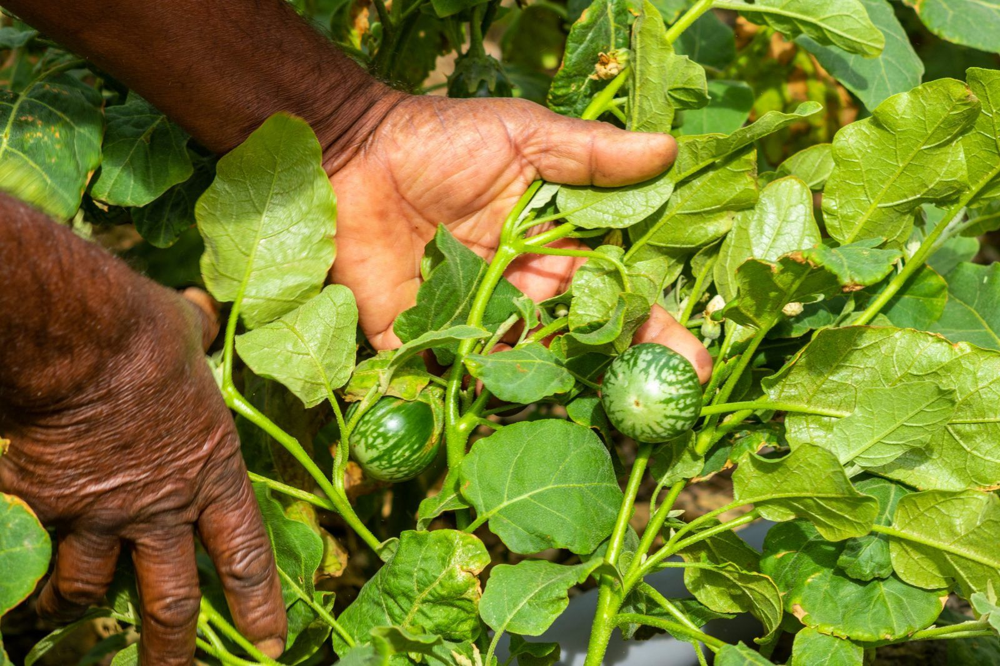

Semer
Quarante planches derrière la cuisine, semées selon le calendrier lunaire. Pas de pesticides, du compost et de la patience.

Une petite table au bout d’un chemin de terre. Vingt-quatre couverts, un potager de quarante planches, et une carte qui change avec la récolte.
Quarante planches derrière la cuisine, semées selon le calendrier lunaire. Pas de pesticides, du compost et de la patience.
Chaque matin à six heures et demie, Mireille parcourt les rangs et décide de la carte avec ce qui est mûr.
Douze heures plus tard, c’est dans votre assiette : grillé, cru, en carri ou en rougaille. Rien ne se perd.
Du mardi au dimanche, de 12 h à 14 h 30 et de 19 h à 22 h.
Au bout d’un chemin de terre, dans le sud de l’île. Suivez l’odeur du maïs grillé.
Menu végétarien tous les jours. Les enfants sont les bienvenus, le jardin est à eux.